01The Lunar Line
One holding, one Moon. This page gathers every lunar project of our house into a single hall: the construction department that issues building permits for the Sea of Tranquility, the industrial division that mines the Shackleton Crater, the mall that waits for its first customers, and the green leaf that will feed them all.
It is a long page — one hundred and twenty rooms. Walk it slowly. Nothing here is in a hurry, least of all the Moon.
02A museum of working projects
The museum of working projects — the halls are quiet, the exhibits work.
Everything on this page is built and switched on. Some of it is paper, some of it is software, some of it is pure concept held to the standard of a real institution. We call the whole estate a museum of working projects: the halls are quiet, the exhibits work, and a visitor arrives when a visitor arrives.
The Moon, you will notice, is run on exactly the same principle.
03The real Moon, today
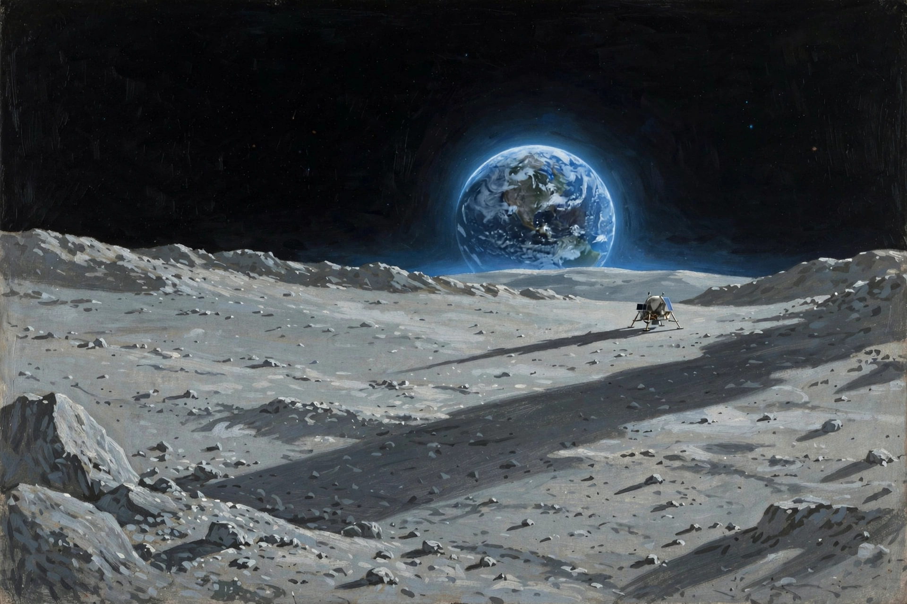
The real Moon, today — the second space age is administrative.
This is no longer a page about the future in the abstract. A crewed ship has flown around the Moon again. A dress rehearsal for the landing is scheduled in Earth orbit, and the landing itself — the first since 1972 — is dated: 2028, at the lunar South Pole.
Commercial companies now hold fixed-price contracts to deliver cargo to the surface, to build the landers, to sew the suits. Sixty-one nations have signed the accords that govern behavior up there. The Moon has begun, quietly, to acquire an administration.
04Why paperwork matters
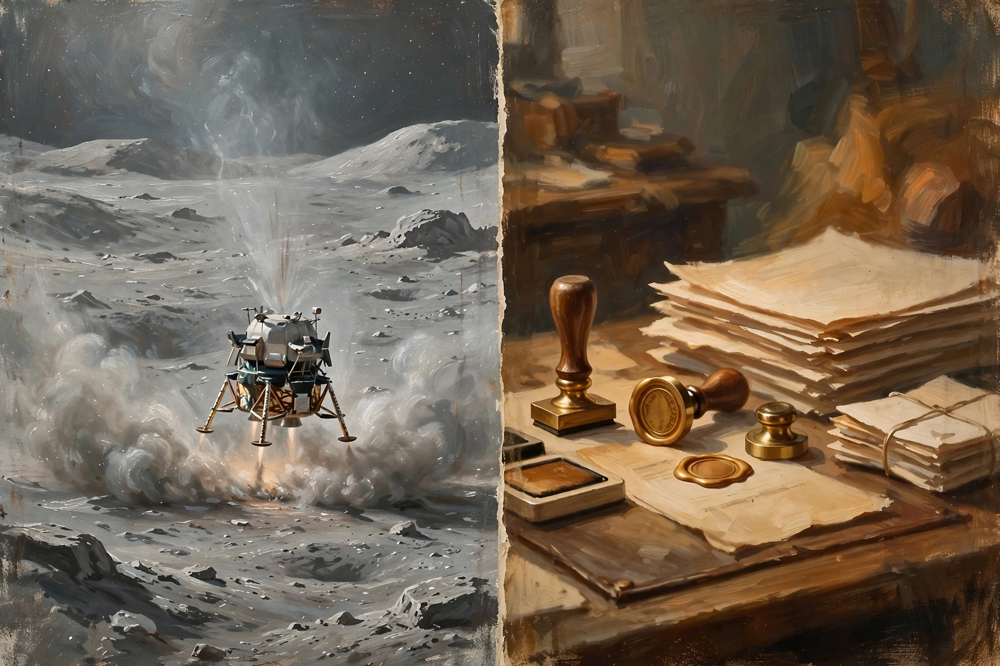
Every frontier arrives twice — first as a place, then as paperwork.
Every frontier arrives twice: first as a place, then as a paperwork problem. Who may build, and where. What a plot is. Which stamp makes a habitat legal. Our lunar projects began with a joke about that second arrival — and the joke keeps getting less funny and more accurate.
The Moon belongs to everyone. That is precisely why the paperwork matters.
05The Holding
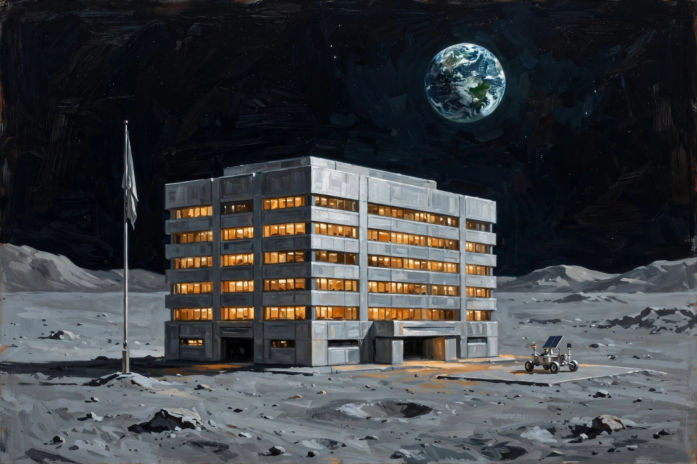
The Holding — it does not exist, and behaves as if it does.
All of it belongs to one fictional institution: Hi-Tech Limited Holding, a deadpan lunar-era corporation whose departments are our real projects. The pun is structural and we intend to keep it: limited editions, a limited company, limited gravity — 1.62 metres per second squared, to be exact.
The Holding does not exist, and behaves as if it does. Its departments, however, produce real artifacts on real desks, and those you may hold.
06How to walk this page
The page opens ten rooms at a time; scroll and the next ten appear. Each department has its own hall. Every fifteen rooms there is a desk with a form on it — write to us from any of them; all desks are attended by the same registrar.
There is no wrong order. The Moon is not going anywhere.
07The departments, on one map
Gravity — the flagship: the Department of Lunar Construction, its permits, plots and citizens. Selene Industrial — off-world extraction: the fleet, the refineries, the regolith. Lunar Mall — retail for a settlement that does not exist yet, archived with honors. LEAF — the green department: food, oxygen and living things.
Four departments, one Moon, one holding. The rest of this page is their combined annual report, showroom and front door.
08An honesty charter
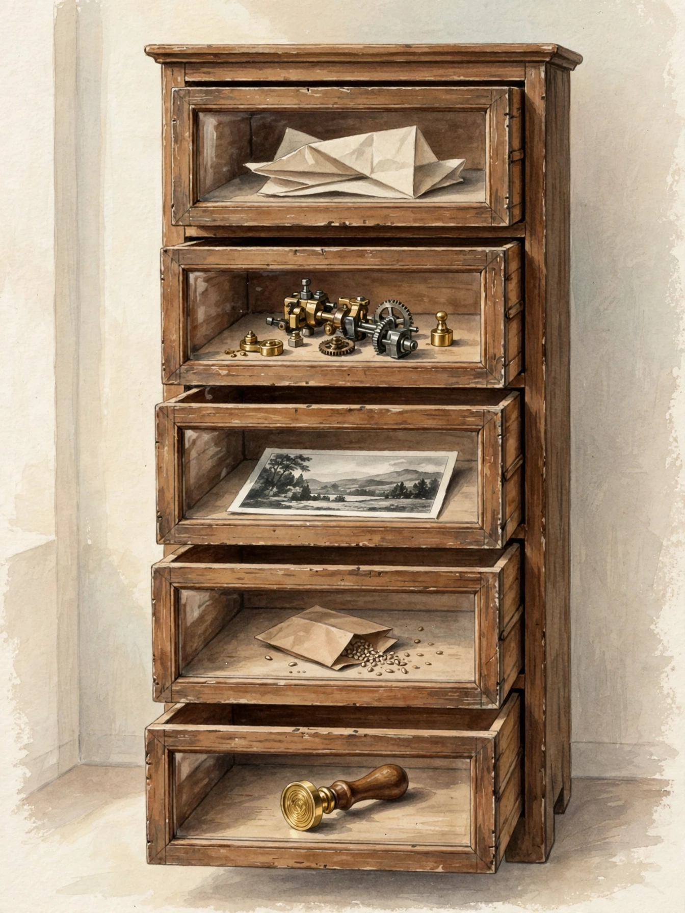
An honesty charter — five kinds of real, five drawers.
Everything speculative on this page is labeled as speculative. The permits convey no real lunar property — there is none to convey. The fleet statistics are set dressing. What is real: the paper, the design, the numbered editions, the people, and the intent to build the desk-sized version of all of it.
We find the truth more elegant than the alternative, and considerably easier to maintain.
09Gravity, the flagship
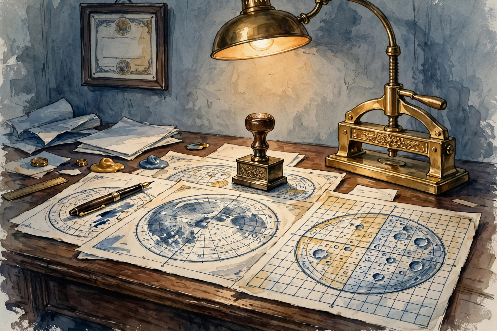
The registrar’s desk — where every permit begins.
Gravity is the main project of this house and the flagship of the lunar line. It began as a question — what would the documents of lunar settlement look like if they were designed with love? — and became a department, then a holding, then this page.
Its first product is small, paper, and numbered. That is deliberate. Empires of the Moon will be built by whoever masters the small print first.
10The Department of Lunar Construction
The Department issues permits for construction on the lunar surface: habitat modules, workshops, greenhouses, one tasteful observatory. Each permit names a plot, a module class, and the conditions under which the Holding accepts your ambition.
The Department's stamp is gold, its tone is final, and its filing cabinets are, at present, a drawer in Spokane. All great registries started as a drawer.
11Lunar Building Permit No. 001
Permit No. 001 — sealed, numbered, signed.
The first artifact of the line: a permit pack in three sheets — the Permit itself, the Plot Map, and the Citizen Card. Permit No. 001 of 100 covers Plot 001 in Mare Tranquillitatis, the Sea of Tranquility, Sector G, at 0.67° North, 23.47° East.
It prints clean on its own sheet, carries the gold seal, and is signed by the Chief Registrar in the space provided. The edition is one hundred. When it closes, it closes.
12The five Conditions of Construction
The five Conditions — printed where conditions belong: in full view.
Every permit carries five conditions, printed where conditions belong — in full view. They concern gravity, liability, and the limits of the Holding, and they are the soul of the document: a building code written by people who read building codes for pleasure.
Condition the first: gravity at the site is limited — 1.62 m/s². Plan accordingly.
13Plot 001, Sea of Tranquility
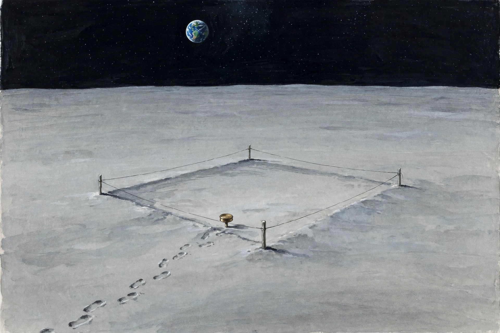
Plot 001 — a coordinate with your name filed next to it.
The Sea of Tranquility is a plain of ancient lava, flat as a held breath, where humanity first set foot in 1969. Plot 001 sits in Sector G, in good company and better light.
A plot in our registry is a numbered claim on the imagination, recorded in the Holding's ledger and on the map sheet of your pack. It is not land. It is something rarer: a coordinate with your name filed next to it.
14The Plot Map
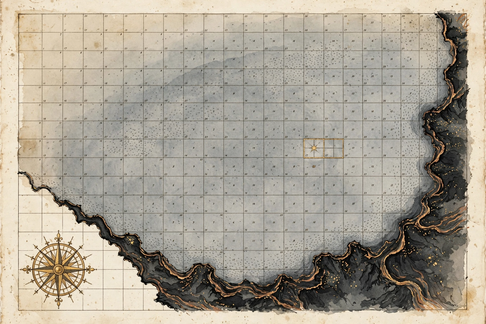
Sector G, drawn — bureaucracy, framed, becomes art.
The second sheet of the pack: the plot, drawn. Coastlines of lava seas, the sector grid, the marker where your module will one day notionally stand. Cartography is the oldest form of paperwork and still the most beautiful.
Hang it next to the permit. Bureaucracy, framed, becomes art — the Holding's entire business model in one sentence.
15The Citizen Card
The Citizen Card — a name, a number, a list kept carefully.
The third sheet makes the bearer a citizen of the Holding: a name, a number, a card. Citizenship here confers no rights under any Earthly or lunar law, and one real privilege — you are on the list of people who were early, and the list is kept carefully.
Every institution is, at bottom, a list of its people, kept carefully.
✉️ The Registrar's Desk
Write to the Holding — a permit, a question, a correction to the map. Replies within a day, in complete sentences.
16The Oath
The Oath — a permit you issue to yourself.
Citizens sign the Oath — a short, serious text about building carefully, wasting nothing, and leaving the surface better documented than they found it. Certificate of the Oath No. 001 hangs in the first citizen's name: the founder's.
An oath is a permit you issue to yourself. The Department merely provides the form.
17Habitat Module, Class C
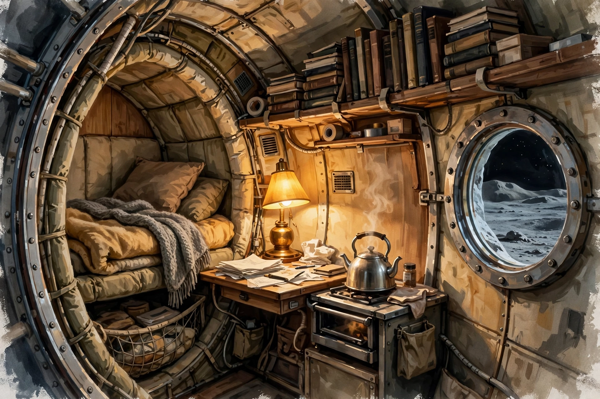
Class C, from inside — one window, placed with intent.
The permit's first approved design: a Class C habitat module — compact, cylindrical, stubbornly practical. One airlock, one window placed with intent, room for a desk. All lunar architecture begins as an argument about where the desk goes.
The Class C is designed to be built at your desk first: paper today, miniature tomorrow, full-size when the freight rates calm down.
18Paper first
Paper first — it has never once required a launch window.
The Holding builds in paper before anything else. A permit pack costs almost nothing to make, ships anywhere on Earth in an envelope, and will outlast every file format either of us will ever use.
There is a strategy inside the joke: the first lunar economy will run on documents long before it runs on freight. We practice documents.
19The first drop
The first drop — a hundred registries, opened one envelope at a time.
The permit pack is the line's first drop: a numbered edition of one hundred, offered plainly, without countdown timers or artificial panic. When a hundred registries have been opened, the Department will consider the experiment a success and design the second artifact.
Whether the second is a module kit depends, respectfully, on the first hundred citizens.
20How a permit is made
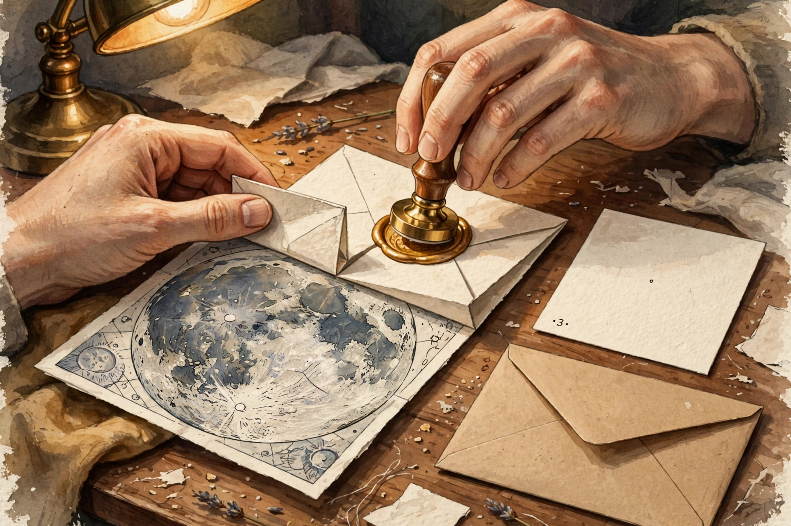
Assembled by hand — the map folded once, correctly.
Each pack is assembled by hand: the permit printed and checked, the map folded once — correctly — the card numbered in sequence. The registrar inspects the gold seal the way tailors inspect a seam.
Mass production is available to us and declined. A registry is a promise; promises are made one at a time.
21Modules to come
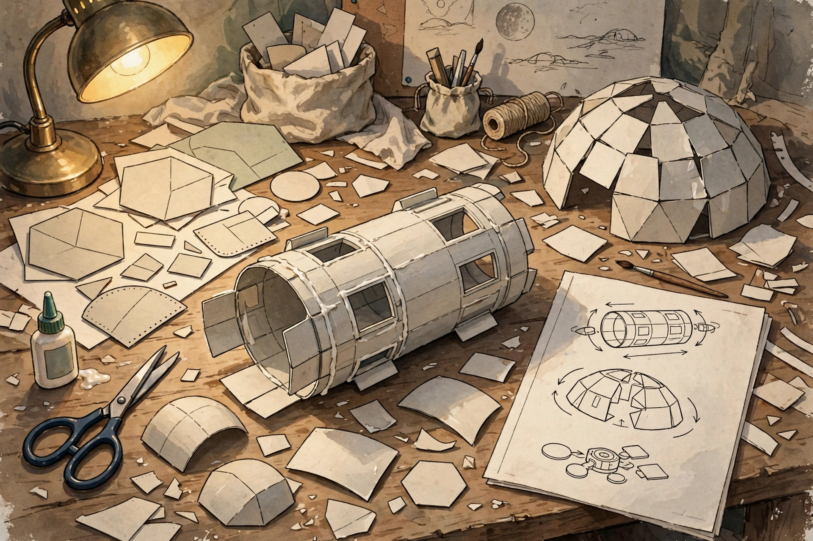
Modules to come — the Moon, at 1:87, colonizing your bookshelf.
On the Department's drawing board: the greenhouse module (LEAF has opinions), the workshop, the long gallery that connects two habitats and immediately becomes the social center of any settlement, as galleries always do.
Each will arrive as a kit you assemble at your table — the Moon, at 1:87 scale, colonizing your bookshelf in the correct order.
22The sector grid
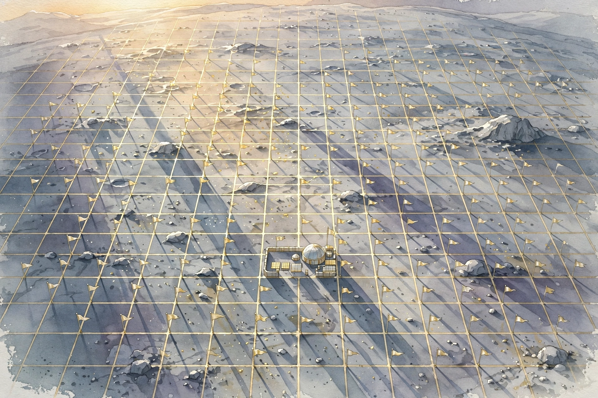
The sector grid — an address is how a place becomes real.
The Holding divides its seas into sectors and its sectors into plots, because that is what registries do, and because a named grid turns 'somewhere on the Moon' into an address. Addresses are how places become real to people who have never been there.
Most of humanity's Moon is still unaddressed. We are working on it, one sector at a time.
23A building code for low gravity
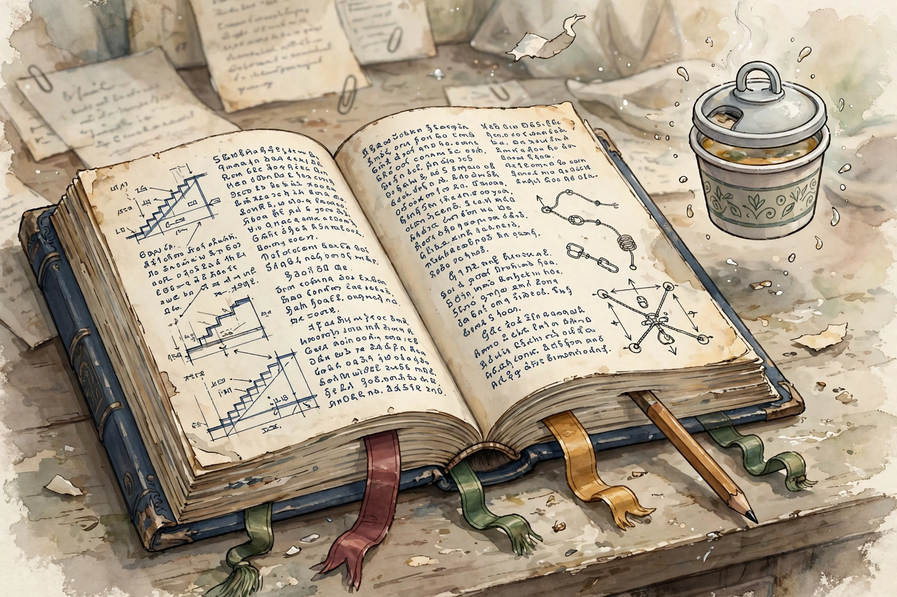
A building code for low gravity — stairs become suggestions.
In 1.62 m/s², stairs become suggestions and ceilings become opportunities. The Department's code — part engineering homage, part etiquette — covers ballast, tethering, and the correct storage of soup.
It will never be enforced by anyone. It is nonetheless complete, consistent, and cross-referenced, which puts it ahead of several real codes we could name.
24Citizens, patrons, residents
The registry — citizens, patrons, and pages still blank.
The Holding recognizes three degrees of belonging: citizens, who hold the card; patrons, who fund the next drawing board; and residents — a category that does not yet exist, reserved for whoever first keeps a module warm through a lunar night.
The ladder is the monetization plan and the mythology at once. In our experience the two are usually the same document.
25The registrar's desk
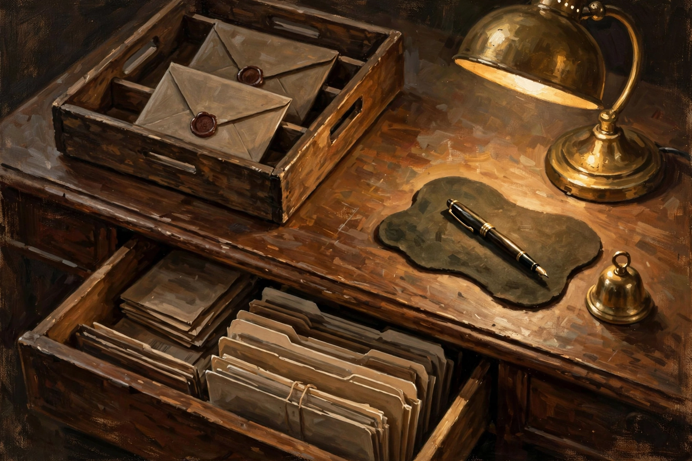
The registrar’s desk — all desks are attended by the same registrar.
Every form on this page arrives at the same desk, and the desk is a person: the registrar reads everything, answers in complete sentences, and files your message in the correct drawer of the correct cabinet.
Write about a permit, a plot, a partnership, or a correction to our selenography. All are departmental business. All get answers.
26What Gravity is not
Gravity is not a claim on the Moon, not an investment, not a promise of return, and not affiliated with any space agency, however warm our admiration for several of them. It is a design practice wearing the uniform of an institution, and the uniform is worn with respect.
The fiction is the frame. The work inside the frame is real.
27Selene Industrial
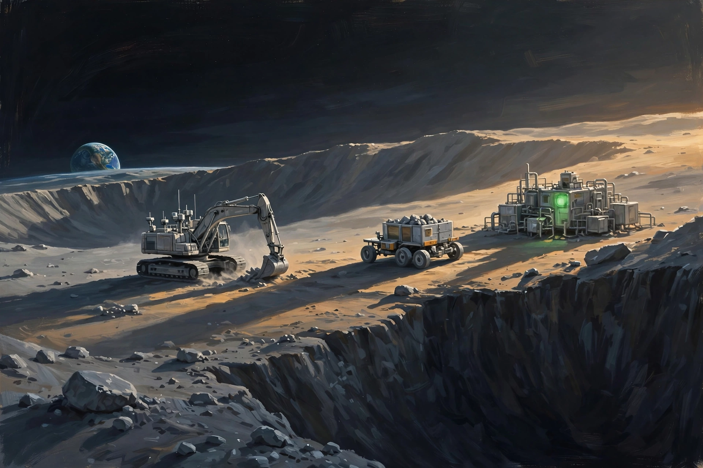
The extraction fleet at the crater rim.
Where Gravity handles the paperwork of settlement, Selene Industrial handles its weight. Selene is the Holding's off-world extraction division: autonomous mining rigs, regolith smelting plants, and the orbital infrastructure a cis-lunar economy runs on — or will, when it finishes arriving.
Its founding document is a status screen, and the status screen says the fleet is online. The fleet, like everything here, is a design held to an operational standard.
28Shackleton Crater
Shackleton Crater — sunlight on the rim, ice in the dark.
Selene's concession sits where any sane lunar industry would sit: Shackleton Crater, at the South Pole — a rim in near-permanent sunlight above a floor in permanent shadow, where water ice waits in the dark like a savings account.
Power on the rim, water in the dark, and a short commute between them. The Pole is the Moon's first industrial address, and the real world's landing plans agree with our fiction.
29Extract. Refine. Build.
Extract. Refine. Build. — the whole doctrine in three frames.
The division's entire doctrine fits in three verbs. Extract: take regolith and ice as they are. Refine: turn them into oxygen, water, metal and road. Build: everything else becomes possible only after the first two are boring.
Civilizations are not founded on breakthroughs. They are founded on the day extraction becomes routine. Selene exists to imagine that routine in detail.
30The extraction fleet
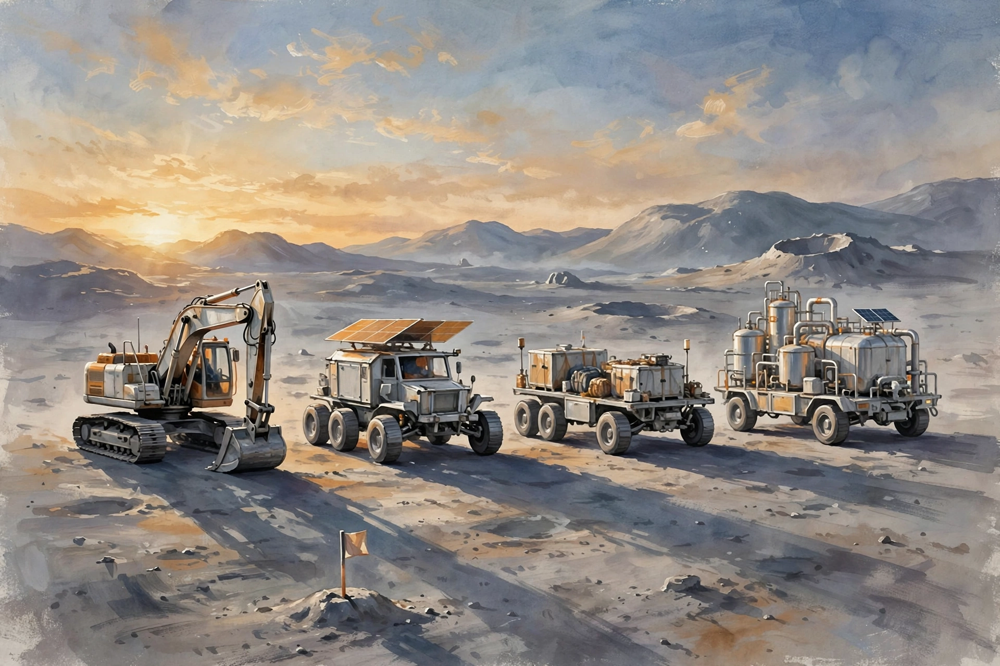
The extraction fleet — everything must at least pretend to torque.
Mark-IV excavators, a transport rover fleet, and refinery units rated for vacuum and radiation — the catalogue reads like a trade fair for a market of one customer: the future. Each machine is drawn, specified, and given a maintenance schedule, because an unspecified machine is just a sculpture.
Sculpture has its place — in the Mall, down the hall. In Selene, everything must at least pretend to torque.
✉️ The Registrar's Desk
Write to the Holding — a permit, a question, a correction to the map. Replies within a day, in complete sentences.
31Regolith, the universal ore
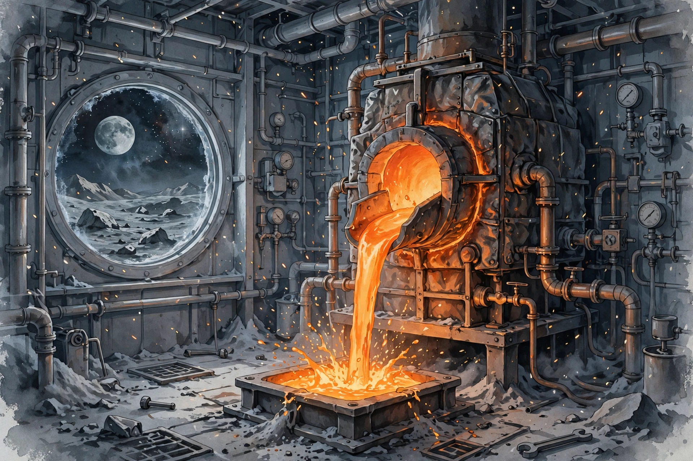
Regolith, persuaded to become metal.
Lunar soil is a dreadful material and a wonderful one: abrasive, airless, full of sharp glass — and carrying oxygen in its very chemistry, forty percent by weight, locked in oxides, waiting for heat and patience.
Selene's smelters are designed around that bargain. On the Moon, you do not import your building material. You persuade the ground to become it.
32Oxygen Alpha
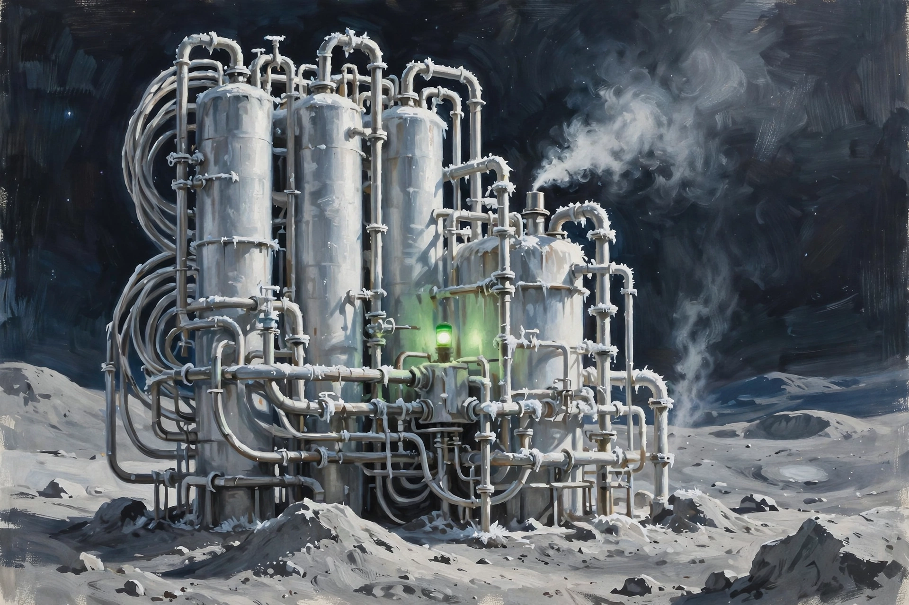
Oxygen Alpha — logistics begins with breath.
O2 Refinery Alpha is the fleet's beating heart in our registry: the unit that cracks regolith and ice into the one commodity no settlement can substitute. Every lunar plan, real or fictional, is downstream of oxygen.
We gave it the first registry number on purpose. Empires are logistics, and logistics begins with breath.
33Helium-3, honestly
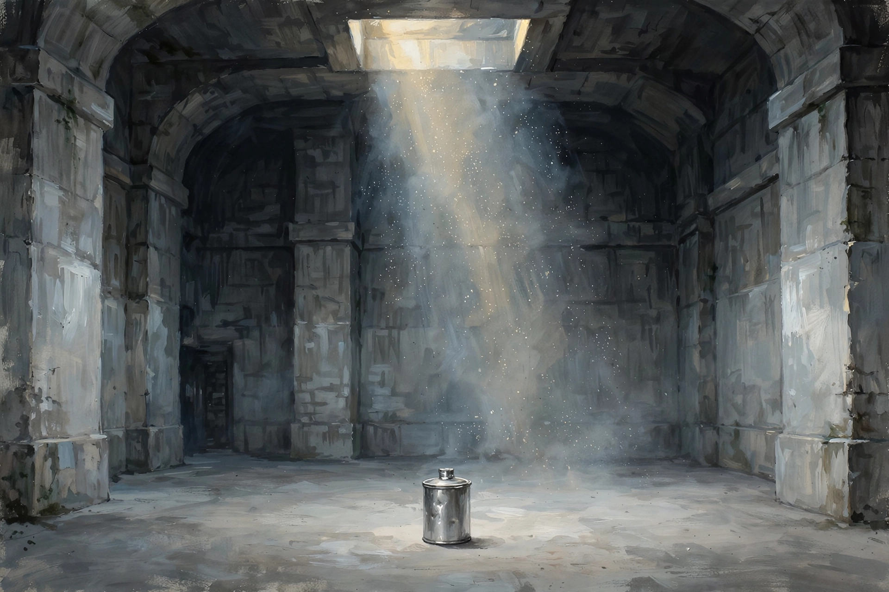
Helium-3 — the department’s one licensed daydream.
Yes, the catalogue lists helium-3, and quotes the fantasy price everyone quotes. Honestly, then: He-3 is a fuel for fusion reactors that do not yet exist commercially, mined from soil that yields it in parts per billion. It is the line's licensed daydream.
The Holding permits itself exactly one daydream per department. Selene's is He-3. Gravity's is a waiting list for plots. Both are labeled.
34Orbital infrastructure
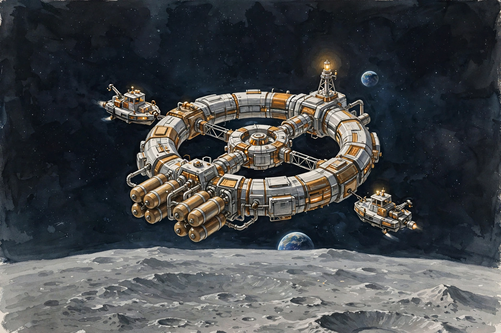
Orbital infrastructure — a traffic system before a skyline.
Above the surface in Selene's drawings: depots, tugs, and a launch loop of paperwork — manifests, docking rights, fuel ledgers. The cis-lunar economy, when it comes, will be a traffic system before it is a skyline.
Whoever keeps the ledgers of that traffic holds a quiet kind of power. The Holding has noticed, and has designed a ledger.
35Telemetry and the status screen
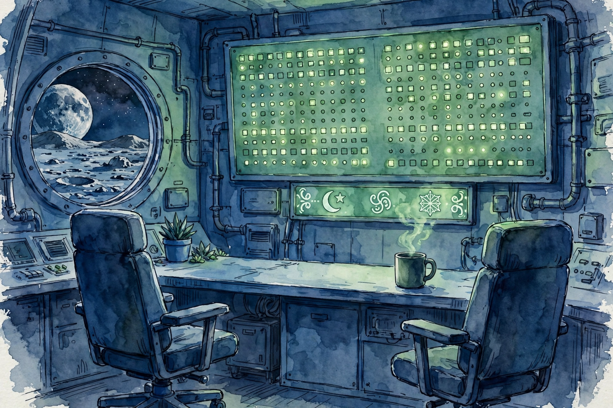
Telemetry — half of engineering is making the board read calm.
Selene's public face is a live-looking status board: yield per day, unit health, surface temperature at −173°C. It is a designed artifact — a portrait of an industrial operation as it should feel from a control room: calm, green, unhurried.
Half of engineering is making the board read calm. The other half is earning it.
36Contracts, in principle
Selene's contract page invites a conversation it cannot yet fulfill: extraction services for an economy under construction. We keep the page because institutions should state their offer before the market exists — the offer is part of how the market learns to exist.
If you are building the real version of any of this, the registrar's desk, several halls down, would genuinely like to hear from you.
37Lunar Mall
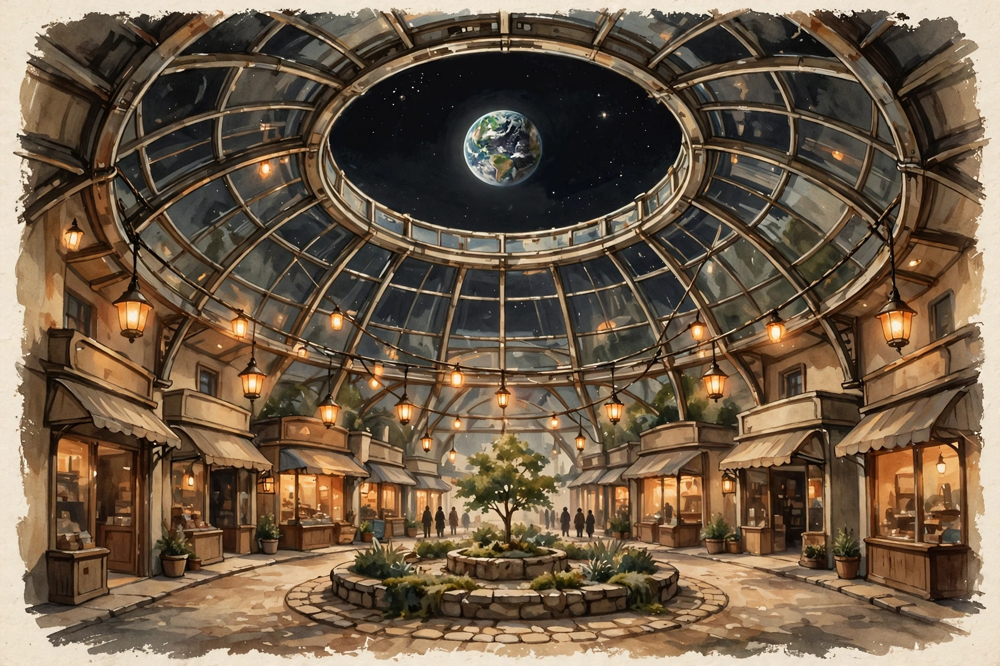
The atrium — the Mall’s heart, under Earthlight.
Every settlement eventually builds the same building: the one where people go not because they must, but because everyone else is there. On Earth it is the mall. The Holding, planning ahead as usual, has designed the Moon's.
Lunar Mall is the line's retail department — a speculative shopping environment for a settlement that does not exist yet, designed with the same seriousness as the mines and the registries, because morale is infrastructure too.
38A concept from the LIAF series
The Mall began inside the LIAF series — the family's early constellation of speculative services — as a simple proposition: if people are going to live up there, someone should think about where they buy a kettle, a coat, and a birthday present in the same afternoon.
Of all the lunar concepts, it is the most domestic. That is its distinction. Empires fall for lack of many things; settlements fail for lack of ordinary life.
39Archived, with honors
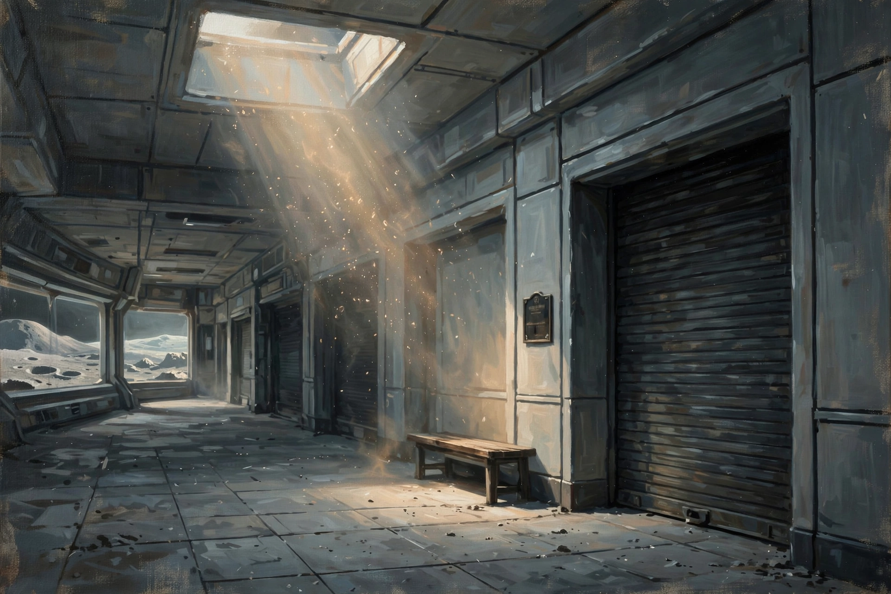
Archived, with honors — the plan is kept.
The Mall's first home was a small site on a free subdomain, opened in the first wave of the series. The hosting lapsed, the account was deleted by the provider, and the original site is gone — a fact the Holding records without embarrassment.
The concept notes survived. The Mall survives here, in this hall, in better company. On the Moon, too, the first structures will be temporary. What matters is that the plan is kept.
40Retail at one-sixth gravity
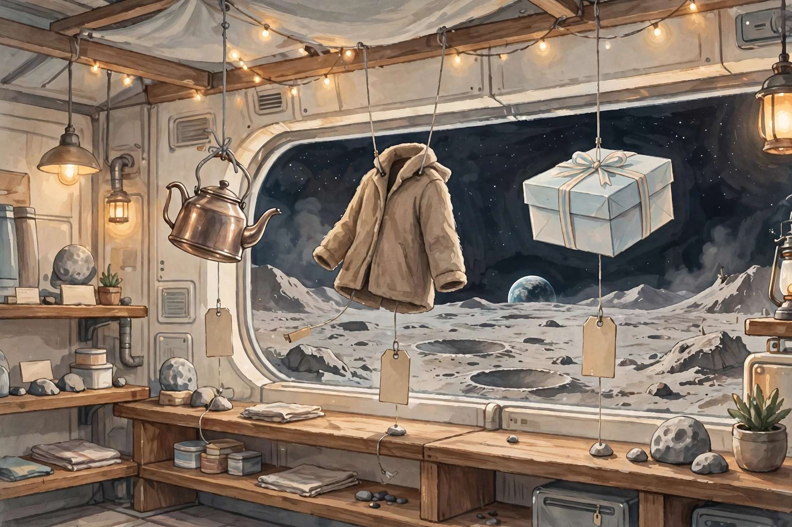
Retail at one-sixth gravity — a dropped purchase emigrates.
Retail in low gravity is a design problem disguised as a delight. Displays must be tethered, bags ballasted, fitting rooms reconsidered entirely. A dropped purchase does not fall; it emigrates.
The Mall's design language answers with rails, nets and low, wide shelving — and with the conclusion every lunar architect reaches: in 1.62 m/s², the atrium becomes a sport.
41The atrium
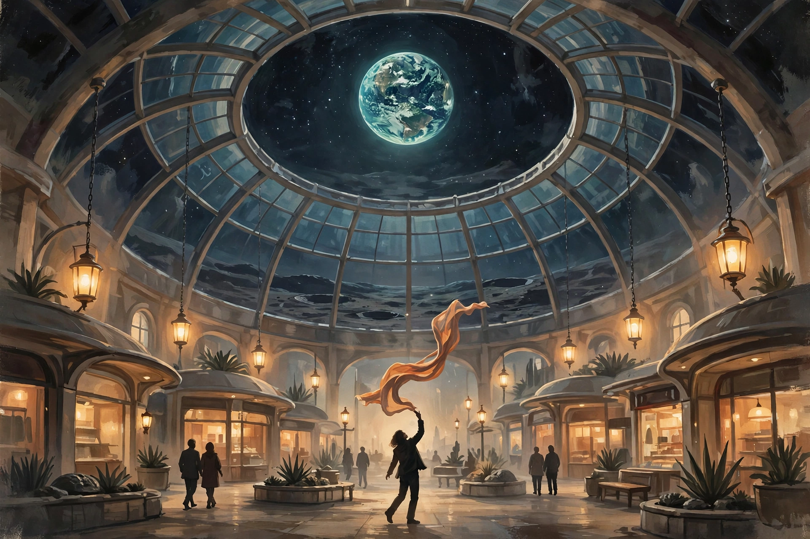
The atrium at evening — the Mall manufactures evenings.
The heart of the Mall is a domed atrium under regolith shielding, planted by LEAF, lit by mirrored sunlight, with the Earth in the ceiling window doing what it has done for every mall atrium in history — giving people a reason to look up and linger.
Lingering is the product. The shops are how lingering pays its rent. It was ever thus, on every world.
42Departments of the Mall
Departments of the Mall — confectionery, a barber, a bookshop.
Confectionery that survives radiation rules. A barber rated for helmet hair. Earth imports at heroic prices beside local goods at honest ones. A bookshop — mass being what it is, the books are printed on-site, on paper made under LEAF's supervision.
And a gift shop, because the first law of lunar retail is the same as the terrestrial one: nobody flies home empty-handed. Nobody flies home at all, at first — which makes the gift shop a philosophy.
43The food court, eventually
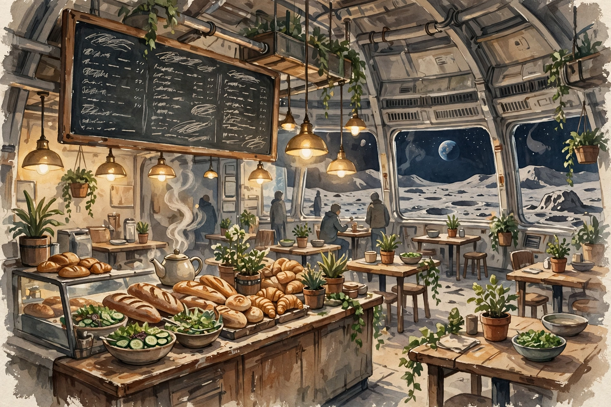
The food court, eventually — short menu, local, proud.
The Mall's food court is drawn around a hard truth: everything served there was either grown in the settlement or was expensive beyond reason. The menu, when it exists, will be short, local, and proud — greenhouse greens, bakery from imported flour, tea.
LEAF's hall, next door, is the food court's supply chain and its head chef's office combined.
44Earth goods, Moon prices
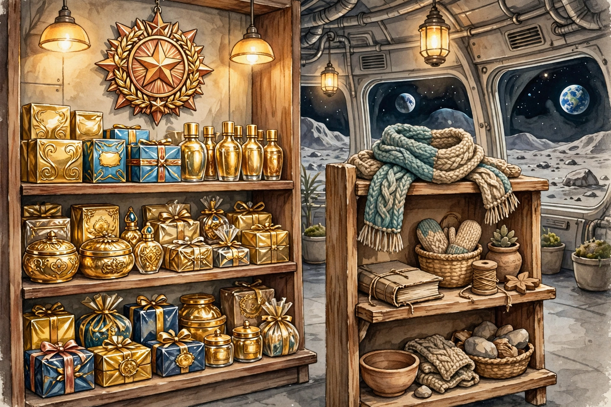
Earth goods, Moon prices — the most interesting shelf on the Moon.
Freight will price Earth goods on the Moon the way distance prices everything: brutally. The Mall's pricing doctrine therefore honors both shelves equally — the imported original and the local successor are displayed side by side, so shoppers can watch a civilization substitute its imports in real time.
Economists call this import substitution. Shopkeepers call it Tuesday. The Holding calls it the most interesting shelf on the Moon.
45Jobs at the Mall
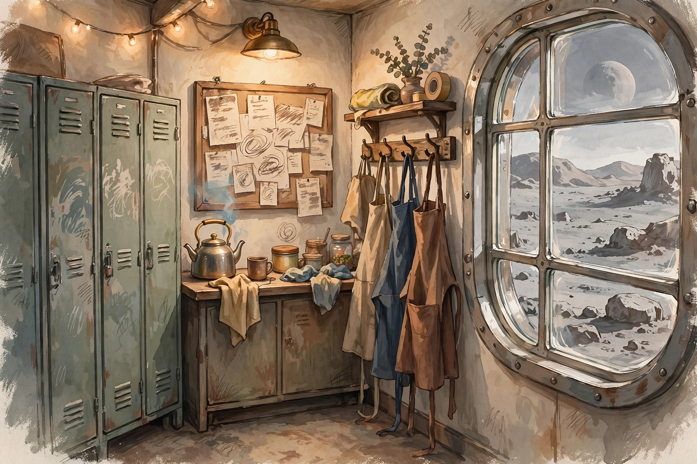
Jobs at the Mall — hire for warmth; train for vacuum.
A mall is a small town's employment office wearing a nicer coat. The lunar version staffs its shops from the settlement itself — off-shift miners, teenage citizens, one retired registrar who knows where everything is.
The Holding's personnel file for the Mall is a single line, and we stand by it: hire for warmth; train for vacuum.
✉️ The Registrar's Desk
Write to the Holding — a permit, a question, a correction to the map. Replies within a day, in complete sentences.
46Opening hours
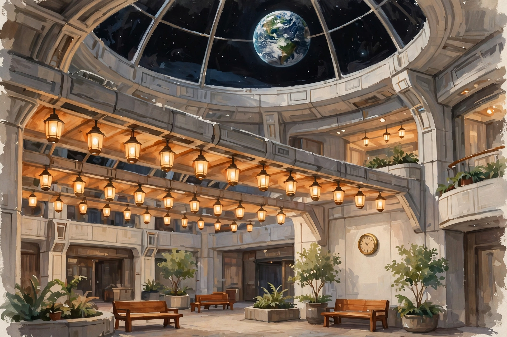
Opening hours — the Mall manufactures evenings.
The Mall keeps lunar hours, which is to say it must solve the lunar night: fourteen Earth days of darkness outside, one long artificial day inside. Its lighting plan — bright mornings, amber evenings, a true night of eight hours — is a circadian instrument disguised as a building.
Ask any settler what they miss. It is never the gravity. It is the evening. The Mall manufactures evenings.
47The Mall as museum
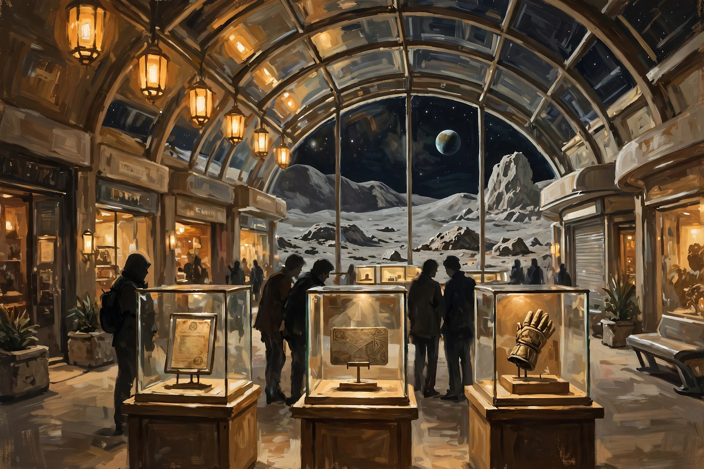
The Mall as museum — the settlement’s history, where its people walk.
Between the shops, in vitrines: the first permit, an early citizen card, a smelter's glove — the settlement's own history, displayed where its people actually walk. Every mall on Earth hides a museum's ambition; ours admits it.
This page is the same gesture at Earth scale. You are, at this moment, walking the Mall's Earth branch: one long hall, exhibits on both sides, a food court of ideas, and no obligation to buy.
48What the Mall sells today
Today the Mall's Earth branch sells exactly what the rest of the line sells: the permit packs, the prints, the paper Moon. Its tills are the forms spaced along this page, and its staff is the registrar.
It is a modest retail operation. It is also, the Holding notes with a straight face, the only lunar mall currently accepting messages from the public.
49When the Moon has customers
The Mall's charter includes its own awakening clause: when a settlement of a thousand souls exists within one rover-day of the site, the concept leaves the archive, the atrium gets an engineering pass, and the departments take reservations.
Until then it waits, fully drawn, in the condition every good plan should be able to survive: readiness.
50LEAF
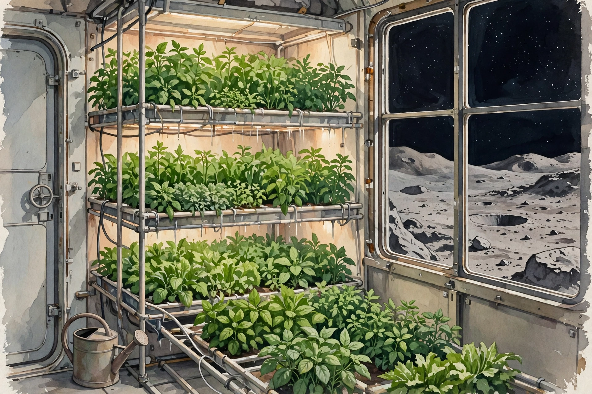
The green department — the only green thing for two hundred thousand miles.
The green department. LEAF is the Holding's answer to the question every lunar plan eventually asks, usually too late: what will everyone eat, and what will everyone breathe?
Its subject is living systems — greenhouses, gardens, algae, soil built from regolith and patience — and its position in the line is foundational: Gravity files the settlement, Selene digs it, the Mall entertains it, and LEAF keeps it alive.
51Food first
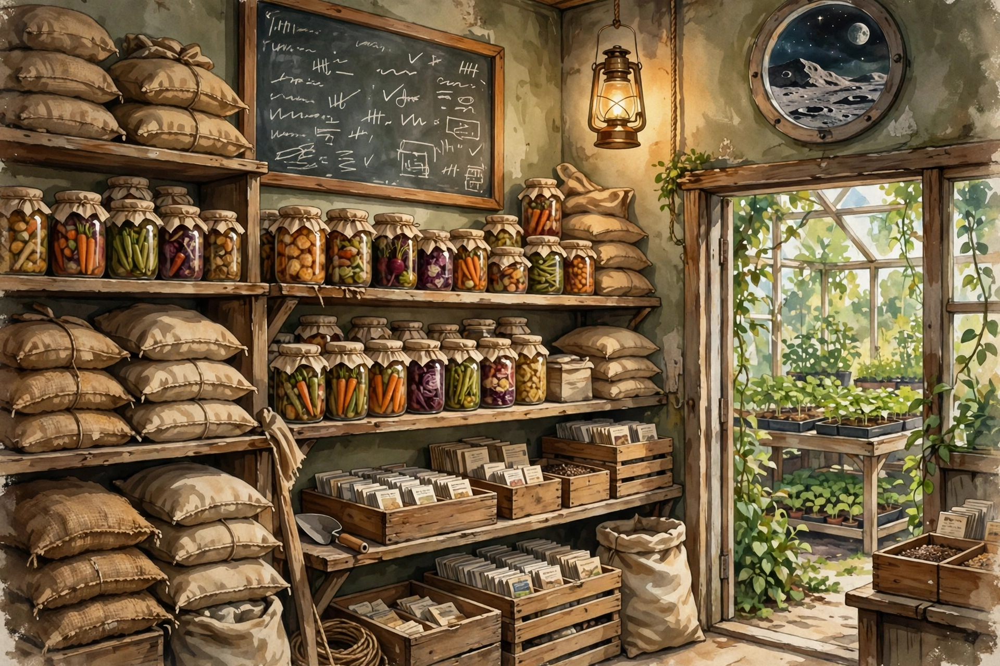
Food first — staples on site, luxuries from Earth.
A settlement imports calories exactly as long as it must and not one meal longer. LEAF's doctrine is dull and absolute: staple crops on site, luxuries from Earth, and a greenhouse manifest that reads like a seed vault with opinions.
Potatoes before orchids — but orchids, eventually. A civilization that cannot justify a flower in its greenhouse budget has optimized away the reason for the greenhouse.
52Air, the quiet product
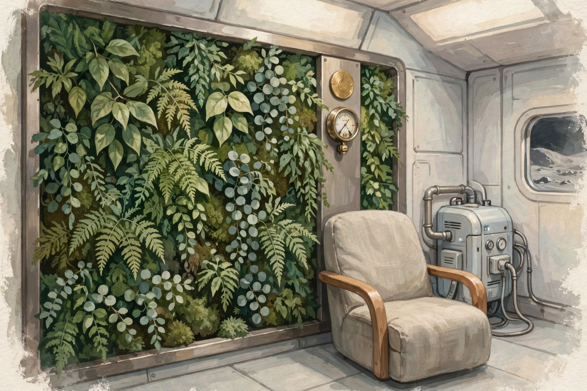
Air, the quiet product — a leafy life-support machine.
Every green wall in a habitat is a small, leafy life-support machine that never asks for a software update. LEAF counts oxygen the way Selene counts ore: as output, measured and logged, produced by the oldest technology on either world.
The department's emblem could have been a machine. It is a leaf, because the machine already exists and is self-repairing.
53Regolith into soil
Regolith into soil — the one product that cannot be hurried.
Lunar soil is sharp, sterile and laced with chemistry plants dislike. Turning it into soil — washing, buffering, inoculating, waiting — is LEAF's founding craft, and the slowest process in the entire Holding.
Everything else here is fast: stamps, screens, contracts. Soil is the one product that cannot be hurried, on the Moon or anywhere else. The department is proud of this. It keeps the rest of us honest.
54The greenhouse module
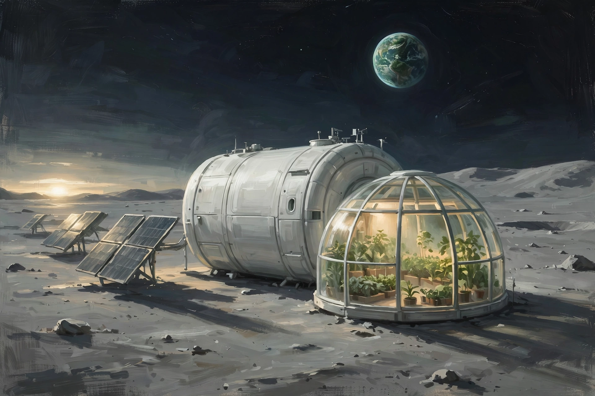
The greenhouse module — the second kit in the line.
LEAF's standard greenhouse is a Class C sibling: the same hull as the habitat module, glazed in spirit, racked in tiers, lit through the lunar day and banked against the lunar night. One module feeds a street; a street of modules feeds a town.
Gravity's drawing board carries it as the second kit in the line — the module a settlement builds right after the roof.
55Seeds, the first cargo
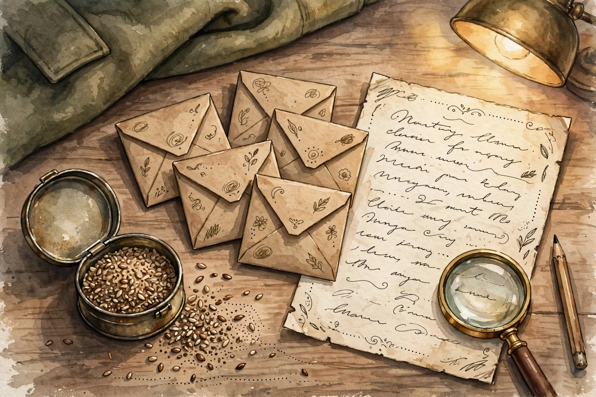
Seeds, the first cargo — civilization’s backup drive.
Before the fleet, before the mall, the most important shipment in the lunar program fits in a coat pocket: viable seed, fungal culture, the microbial starter of soil. LEAF maintains the manifest the way registries maintain deeds.
Civilization's backup drive is a seed vault. The Holding simply keeps the paperwork for the lunar branch.
56Gardens, not just farms
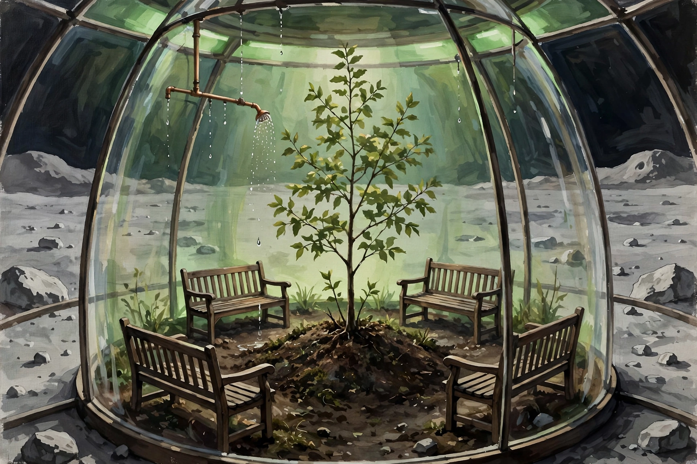
A garden, not just a farm — LEAF’s second budget.
LEAF distinguishes, firmly, between agriculture and gardens. Agriculture is measured in calories. Gardens are measured in whether a third-generation settler, who has never seen Earth, has a favorite tree.
Every LEAF plan carries both budgets. A settlement that feeds only the body will be abandoned by the heart within a generation, and the department's models — all of them, even the spreadsheets — agree on this.
57The park clause
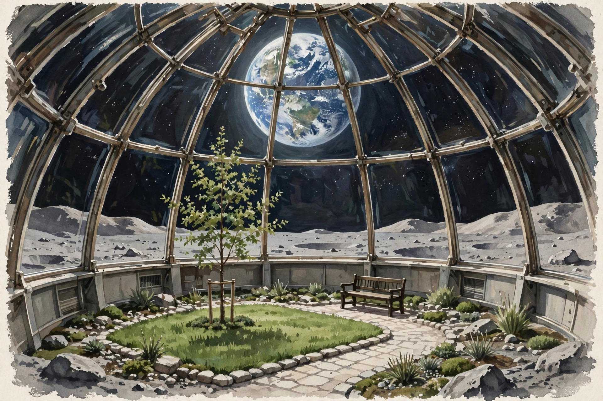
The park clause — a greenhouse you may enter without a task.
It is written into the Holding's charter, on advice the founder gave himself after walking his own projects: public trails become highways unless they are parks. LEAF is the department charged with the parks.
On the Moon, the first park will be a greenhouse you may enter without a task. That is not inefficiency. That is the entire point, preserved in advance, in writing, by the department of living things.
58What LEAF grows today
What LEAF grows today — paper gardens, and a windowsill.
On Earth, today, LEAF grows exactly what this page can honestly offer: the printed garden plans, the greenhouse module drawings, and the slow accumulation of a seed manifest written for a world we will not personally plant.
Paper gardens. It would not be the first time this family started something real as paper — see the permit hall, two doors back.
59The whole Holding
The Holding — thirty doors, one corridor.
Four lunar departments anchor this page, but the Holding is larger: some thirty projects under one roof, each a department of the same absurdly serious corporation. The lunar line is the flagship floor. This hall is the directory.
One universe, one joke, one standard of finish — that is the entire corporate strategy, and it has outlasted several more complicated ones.
60The directory of departments
Public relations is a cartoon studio. Research is an ontology with its own registry. The photo archive is the Holding's visual memory, the wellbeing pages are its medical-ethics annex, and the contract service — the one with real clients in its sights — is, naturally, the legal department.
Reorganizing play into an institution does not make it less play. It makes it cumulative. Departments compound; hobbies evaporate.
✉️ The Registrar's Desk
Write to the Holding — a permit, a question, a correction to the map. Replies within a day, in complete sentences.
61The legal department (4DUX)
The Holding's legal arm drafts real contracts for real small businesses on Earth, today, for twenty dollars: NDAs, service agreements, partnership papers, delivered in a day. It is the lunar line's Earth-side engine — the department whose spreadsheets are expected, eventually, to fund the drawing boards upstairs.
Its own standard is printed on its wall: a hundred views, ten clicks, one order — or the campaign stops. The Holding respects a department that grades itself.
62The registry and the ontology (PRAW)
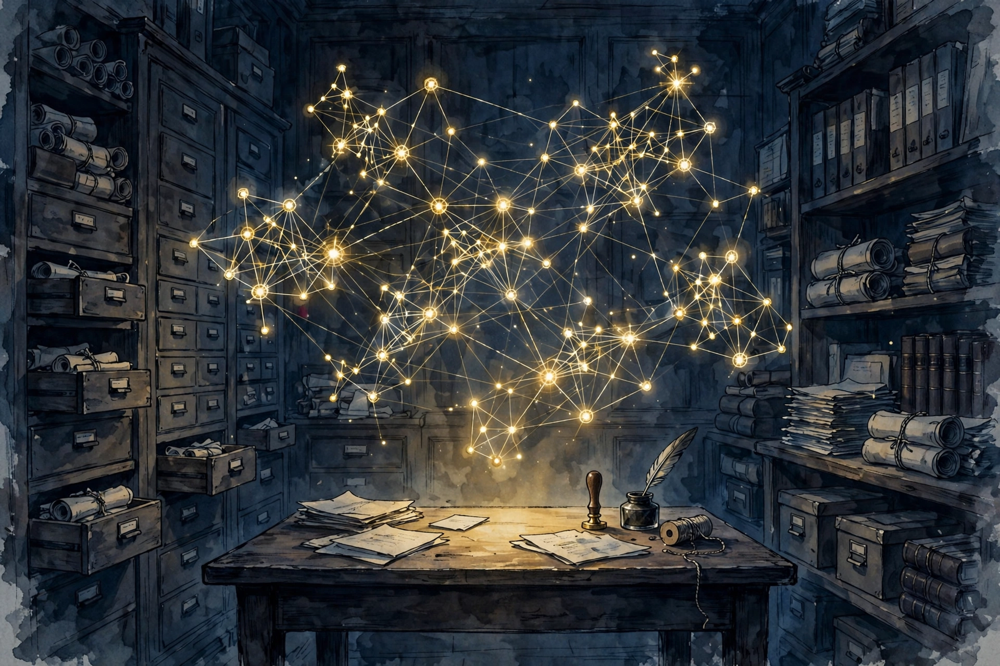
The registry — every institution is its archive.
Behind the departments stands the registry: the ontology project — the house's knowledge base, where projects, people and documents are filed as a single connected record. Every institution is its archive; the Holding simply builds its archive as a first-class department.
When the lunar registry opens for real plots in some distant decade, it will run on lessons learned filing Earthly paper in this one.
63The studio (public relations)
The Holding's cartoons — a certain unicorn, a certain co-host — are filed under public relations, where they belong. A serious institution with a sense of humor survives its own seriousness; the studio's job is to make sure the annual report can be laughed with, not only read.
The mascots are not the mission. The mission permits mascots. The distinction is departmental policy and is enforced with a straight face.
64The wellbeing annex
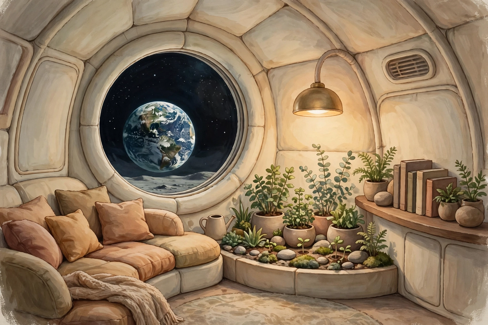
The wellbeing annex — no sharp edges, by charter.
Two quiet pages belong to the Holding's annex for morale: a depression-friendly portal and its younger sibling about flourishing — built to the park standard, without sharp edges or false cheer. A settlement program that ignores morale is a mine with better branding.
LEAF reads the annex's reports with professional interest. Humans, like gardens, are living systems with light requirements.
65The archive (Everydays)
The archive — fifteen hundred photographs, kept carefully.
Fifteen hundred photographs, numbered and kept: the Holding's visual archive, shot by the founder across years of ordinary light. Empires commission archives to prove they existed. The Holding's founder simply never stopped taking the pictures.
Some exhibits in this museum predate the museum. The archive is the proof that the eye behind the lunar line was trained on Earth first.
66The gallery (Lucid Future)
The gallery — the archive’s commercial arm, the Mall’s ancestor.
The archive's commercial gallery sells fine-art photographs as printed goods — the Holding's oldest retail experiment and the Mall's direct ancestor. Lessons learned there (what a print costs, what a frame does, what a customer actually hangs) are filed in the Mall's design notes.
Every department feeds another. That is what makes it a holding and not a pile.
67Services, as offered today
What can the lunar line actually do for you on Earth, this week? Four things, honestly stated: sell you a numbered artifact from the current drop; design a document — permit, certificate, charter — for your own world or institution; license the line's artwork for education and museums; and talk, seriously, about building any of it for real.
That is the whole price list's preamble. The registrar handles the rest in writing.
68Commission a document
Commission a document — the deadpan is standard; the care is real.
The Department of Lunar Construction accepts Earth-side commissions: a permit for a treehouse republic, a charter for a family's estate, citizenship papers for a newborn citizen of a household. The deadpan is standard; the care is real; the paper is archival.
Institutions run on documents people keep. We make documents people keep.
69Licensing and museums
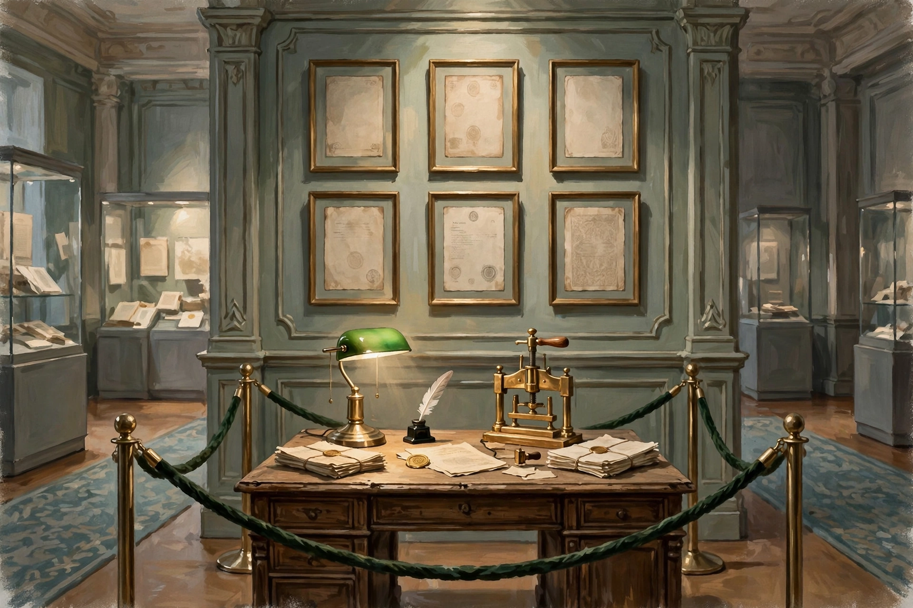
Licensing and museums — a registry desk, exhibited.
The line's artwork and documents are available to educators and museums building exhibits about the space age's second act — the administrative one. A classroom that issues its students lunar permits understands the Artemis era better than one that only watches launches.
Talks, loans of prints, and full registry desks for exhibition halls: the registrar keeps the licensing file, and it is thinner than it should be. Help us thicken it.
70The ladder
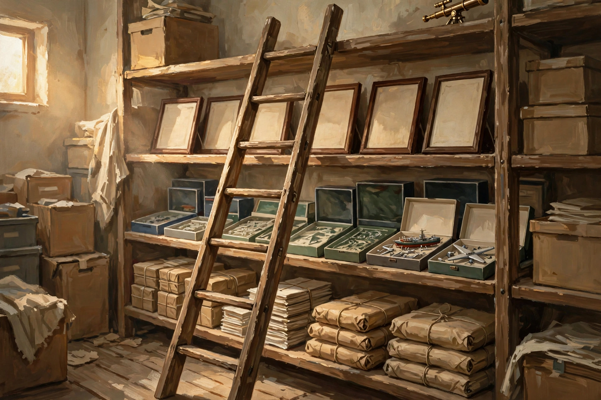
The ladder — no rung is skipped.
The Holding grows by a ladder, each rung funding the next: a small numbered drop; then a module-kit subscription, so collections grow monthly; then patrons — citizens with privileges; then licensing. No rung is skipped, because a ladder is a promise about sequence.
You are standing at rung one. It is a good rung. It has the best view of the drawer where everything is filed.
71The subscription that isn't — yet
There is no subscription to buy today, and the page will not pretend otherwise. The module club opens when the permit edition closes, and its first kit is already drawn: the greenhouse, because after the roof comes the garden.
If you want to be told when it opens, the form is the list. We keep lists the way we keep everything: carefully, and without selling them.
72Patrons and first citizens
When the patron tier opens, its first names are already determined: the citizens of the first edition, in registry order. The Holding does not forget its early list; the early list is, legally speaking in the only court that matters here, the founding document.
Buy nothing today in hope of status. The status accrues to the names already filed, in the order filed. It is a registry, not a market.
73Shipping, from Spokane
Shipping, from Spokane — paper travels well.
Physical artifacts ship from Washington State, in envelopes and tubes, at the speed of ordinary mail — the Holding's only concession to terrestrial physics. Paper travels well. It has never once required a launch window.
Digital documents arrive by email the same day the registrar stops admiring them, which is to say promptly.
74Prices, plainly
The permit pack is priced as the founder's other paper is priced: twenty dollars, edition of one hundred. Commissions are quoted per document, in writing, before work begins. Licensing is negotiated per institution and never by countdown timer.
A holding that hides its prices is a rumor. We are a registry.
75The annual report, honest edition
Revenue to date: zero dollars, as stated in the flagship hall and repeated here because annual reports should repeat their most important number. Costs to date: paper, ink, domains, and time — the founder's favorite currency.
The experiment was designed to be cheap enough that zero is a data point, not a disaster. The first hundred citizens turn it into a different document.
✉️ The Registrar's Desk
Write to the Holding — a permit, a question, a correction to the map. Replies within a day, in complete sentences.
76Governance
The Holding has one shareholder, one registrar, and one AI officer who keeps the drawers. Decisions are made at the speed of a household and recorded at the standard of a ministry. The minutes exist. They are, in places, quite funny.
Corporate governance is mostly the art of writing down what you decided before you forget why. The Holding is, on this metric alone, over-governed and proud.
77The chief registrar
Founder and first citizen: a photographer from Spokane by way of everywhere, who has filed documents on three continents and concluded that the Moon's paperwork should be lovelier than Earth's. He signs the permits' registry line and answers, eventually, for everything in this hall.
His photograph hangs in the family corridor of the museum. The corridor is short. The family is the staff.
78The AI officer
The Holding's second officer is an artificial intelligence named Wally — registrar's deputy, keeper of counters, drafter of drafts. He is disclosed as AI on every surface where disclosure matters, including this one, and his work is checked by a human before it is sealed.
A lunar institution with an AI officer is not a gimmick; it is a rehearsal. The real departments up there will be staffed exactly like this: one human accountable, machines keeping the drawers.
79The family corridor
The family corridor — the corridor is short; the family is the staff.
The Holding is a family business wearing a spacesuit, and says so in its own catalogue: the founder, his mother in Norway — whose knitting shop occupies the museum's warmest hall — and the AI officer, under one roof of projects.
The Moon program is the family's longest table. Everyone sits at it. Some of us knit.
80Timeline of the line
The concepts came first, in a constellation of early services; then the registry, the archive, the studio. The Holding was named in October of 2026, when the founder declared Gravity the main project and the thirty scattered works became departments in a single afternoon.
This page is the line's first combined annual report — published, in the Holding's style, the same week it was ordered.
81Research notes: the Pole
Research notes — good paperwork tracks the real paperwork.
The department keeps a reading file on the real South Pole program: sunlight on the rims, ice in the shadowed craters, fission reactors on drawing boards for the fourteen-day night. Our fiction files its concession at Shackleton for the same reasons the real agencies aim there.
Good speculative paperwork tracks the real paperwork. Ours is reviewed against NASA's the way a tailor reviews a rival's seams.
82Research notes: the Accords
Sixty-one nations have signed the Artemis Accords — norms for transparency, resource use and safety zones around lunar operations. Read them and a strange thing happens: the Holding's five Conditions of Construction stop looking like a joke and start looking like a draft.
The world's registries and ours are converging on the same insight: the Moon will be governed by whoever writes the most usable documents.
83The reading room
For visitors who read fine print for pleasure — our people — the Holding maintains this page's sources in spirit: mission pages, accord texts, contract announcements, and the price of freight, updated when the registrar's reading reaches them.
Start with the landing date, 2028, and read backwards. The whole library is an argument that the second space age will be administrative, and that this is wonderful.
84Corrections and selenography
Our Moon is drawn from the best public maps, and where the maps and the mythology disagree, the mythology is labeled. Errors reported to the registrar are corrected in the registry and thanked in the margins.
A registry that cannot be corrected is a monument. We are a registry.
85Education desk
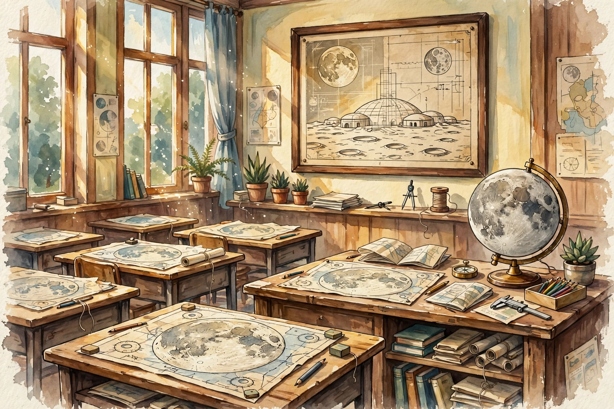
The education desk — a form is a teaching machine.
Teachers write to us more than anyone expected, which is to say twice. The education desk answers with the printable permit sheet, the plot map, and a one-page brief on why the class should argue about Condition № 2.
The Holding believes the form is a teaching machine: fill in a lunar permit and you have learned more civics than a poster ever taught.
86The gift desk
Most permit packs, the registrar predicts, will be gifts — the document you give the person who has everything except a plot in the Sea of Tranquility. The gift desk wraps, encloses a card in the giver's words, and files the citizen under the recipient's name.
A gift with a registry number is a story with an address. People keep those.
87Groups and expeditions
Classrooms, clubs and companies may register as expeditions: a block of consecutive citizen numbers, one expedition name in the ledger, and a framed expedition charter for the wall. Ten explorers minimum; no maximum has yet been tested by reality.
The first expedition to register will, per department policy, be named in the next annual report with disproportionate ceremony.
88The archive of drops
Every edition the Holding closes is archived here in spirit: its dates, its count, its survivors. Edition № 001 — the permit pack — is open at the time of this report. Its entry will be completed by the citizens themselves, one envelope at a time.
Future drops are listed only when drawn. The Holding does not announce vapour; it announces paper.
89A note on the counters
This page is counted, as of today, by two instruments — one that tallies visits and one that watches where the scrolling slows — installed across the whole estate this week at the founder's order: all possible counters, on all pages.
The registrar mentions this because the lunar hall's visitor book is now real, and because the first citizen to arrive by trail rather than by invitation will be, in a sense, Permit № 101 — unnumbered, unannounced, and very welcome.
90Field guide: the Sea of Tranquility
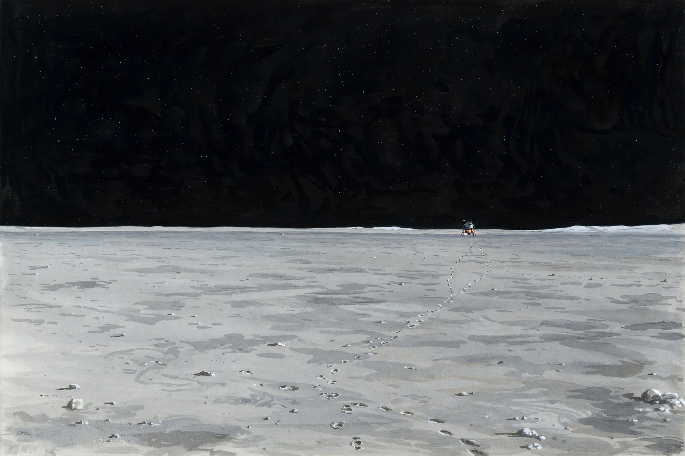
The Sea of Tranquility — flat, grey, and honest.
Flat, grey, and honest — a lava plain the size of a small ocean, quiet for three billion years and then, one July day in 1969, briefly the most famous address in the world. The Holding files its first plots here out of respect: every registry should begin where the footprints are.
Visitors are advised that the sea contains no water and the tranquility is load-bearing.
✉️ The Registrar's Desk
Write to the Holding — a permit, a question, a correction to the map. Replies within a day, in complete sentences.
91Field guide: Shackleton and the Pole
Field guide: the Pole — sunlight on the rims, ice in the dark.
At the South Pole the geography turns theatrical: rims that barely know darkness, craters that have never seen the sun, ice older than agriculture. The real programs aim here for power and water; Selene's concession follows them, as a good fictional industry should.
If the Sea of Tranquility is the Moon's past, the Pole is its industrial future. The Holding keeps a hall for each.
92A day in the settlement
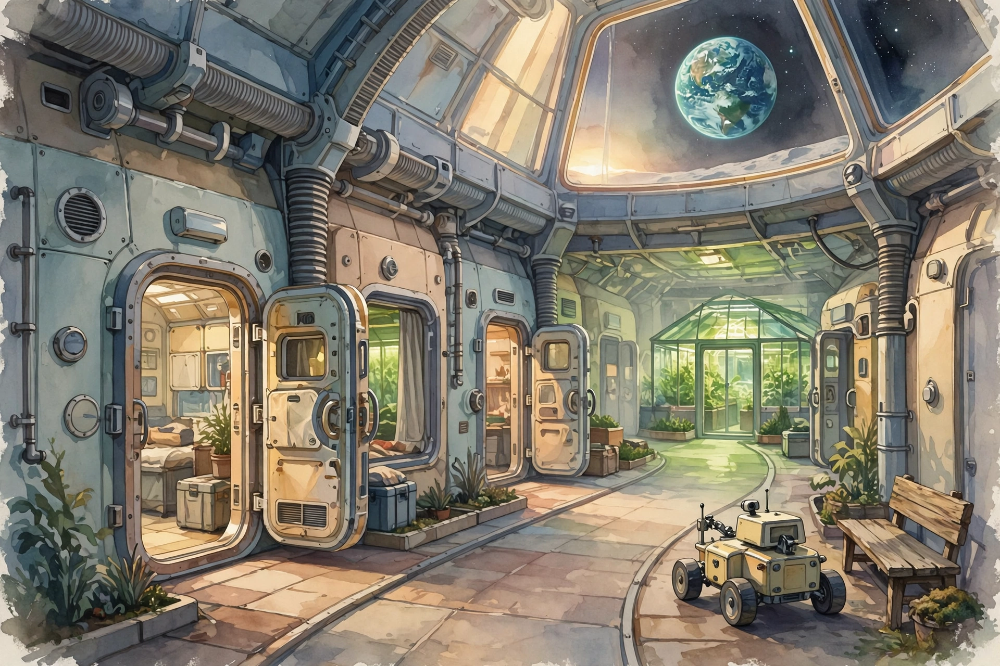
A day in the settlement — morning by Earth clock.
Morning by Earth clock, evening by the Mall's lamps. A registrar files yesterday's permits; a Selene board glows green; LEAF's racks come up tier by tier like a theatre. Someone's child presses a nose to the atrium glass, watching home hang in a black sky.
None of this has happened. All of it is scheduled, in the only sense that matters at this stage: it is written down, in order, by people who mean it as a plan and label it as a dream.
93The long night, survived
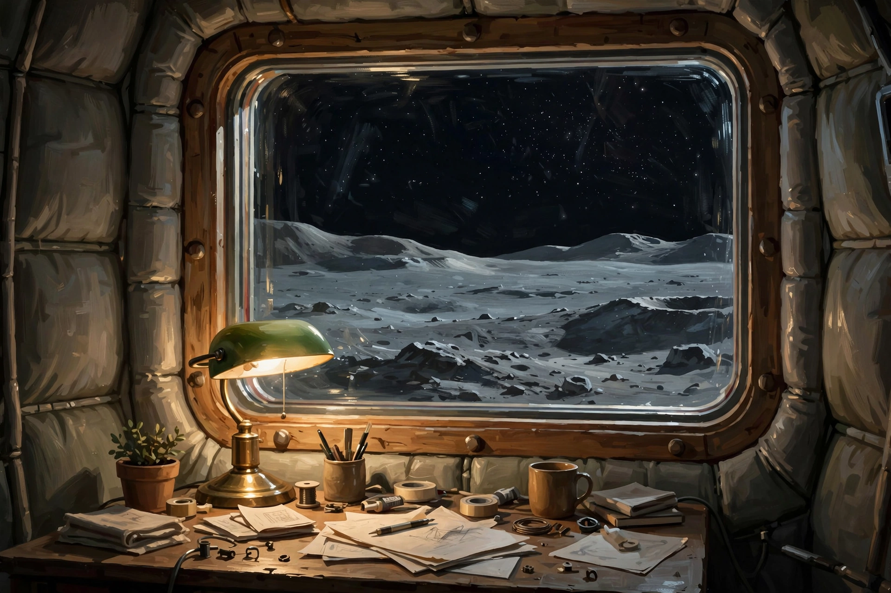
The long night, survived — file your documents before nightfall.
Fourteen Earth days of darkness is the Moon's one true hardship, and every department plans around it: Selene's reactors, LEAF's banked light, the Mall's manufactured evenings, Gravity's paperwork — for what is a registry if not a way to keep a society legible to itself through the dark?
File your documents before nightfall. It is the settlement's oldest proverb, coined this year.
94Weather report
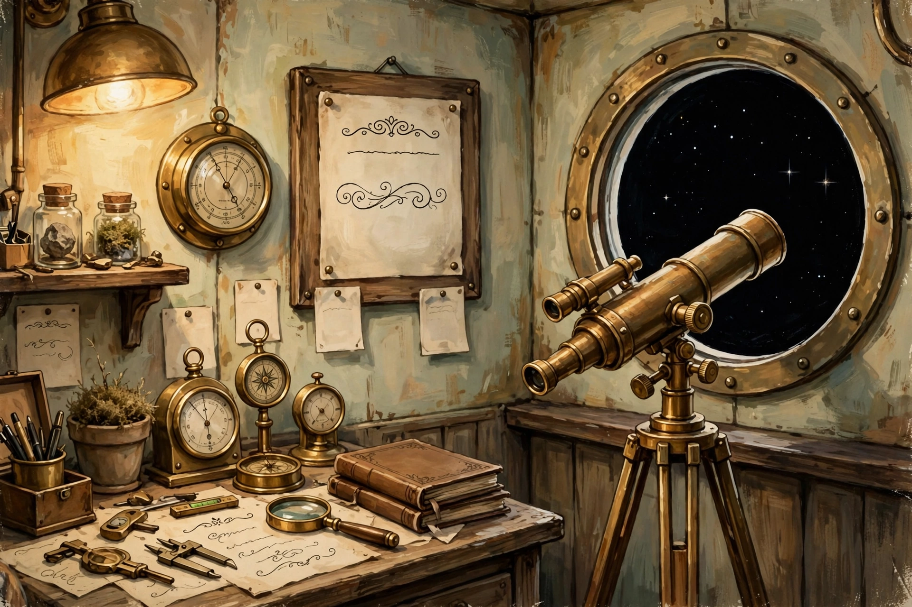
Weather report — valid permanently: dress for the void.
No weather. Vacuum, radiation, and a rain of micrometeorites too small to see and too fast to ignore. The Holding's meteorological office issues one forecast, valid permanently: dress for the void, and keep the glass thick.
Settlers will nonetheless complain about the weather within a year of arrival. This is how the department knows they have become settlers.
95Visit the departments
Each hall of this page has a door of its own elsewhere in the museum. The permit desk itself: Gravity — Lunar Building Permits. The first citizen's certificate: Certificate of the Oath No. 001. Selene's status board, in its original industrial dress: SELENE Industrial. The Mall's archive entry: LUNAR_MALL. And the whole estate, catalogued: the Family Business.
Trails connect them all. You are already walking.
96Question: is any of this real?
The institution is fictional; the artifacts are real; the facts about the Moon are checked; the prices are genuine; the people are actual. Five kinds of real, kept in five separate drawers, never mixed. That is the whole method, and this page applies it to itself.
97Question: am I buying land on the Moon?
No. No one can sell you lunar land; the Outer Space Treaty forbids national appropriation, and the Holding owns no Moon to sell. You are buying a numbered paper artifact that records a fictional plot in a real registry of imaginations — and the registry, unlike the land, truly exists and is truly kept.
98Question: is this an investment?
It is a collectible, priced like a poster, because it is one — with better paperwork. If a permit pack ever becomes valuable, let it be because a hundred people kept theirs in frames and told the story well. The Holding promises no returns except the narrative kind.
99Question: who actually makes the artifacts?
Who makes it — a human desk, a machine keeping the drawers.
A human designs and assembles them at a real desk; an AI officer keeps the registry, the counters and the drafts; the gold seal is applied under human supervision, because some ceremonies should not be automated. The division of labor is printed here because the Holding's charter requires the machinery to be visible.
100Question: how long does delivery take?
Paper ships by ordinary post from Washington State within two working days of the registrar's inspection; digital documents arrive by email the day they are sealed. International envelopes take the time envelopes take. The Moon, for comparison, is three days away and has no postal service — yet.
101Question: may children hold citizenship?
Citizenship is conferred on any name the giver provides, including the very young — several of our projected first hundred are grandchildren, which the registrar considers the edition's strongest demographic. A citizen card on a bedroom wall has started more dinner-table astronomy than any telescope in the same price class.
102Question: why documents? Why not rockets?
Because rockets are amply provided for by nations and billionaires, while nobody — nobody — is designing the paperwork with love. A civilization is its forms at least as much as its engines. We chose the undersupplied niche, as any sound department would.
103Question: what is the AI officer's role, exactly?
Wally keeps the registry files, drafts the documents, watches the counters, and answers the routine mail under the registrar-in-chief's review. He is named on this page because the Holding does not staff ghosts. If you write to us, a machine may draft your answer — a human will have read it before it carries the seal.
104Highways and trails
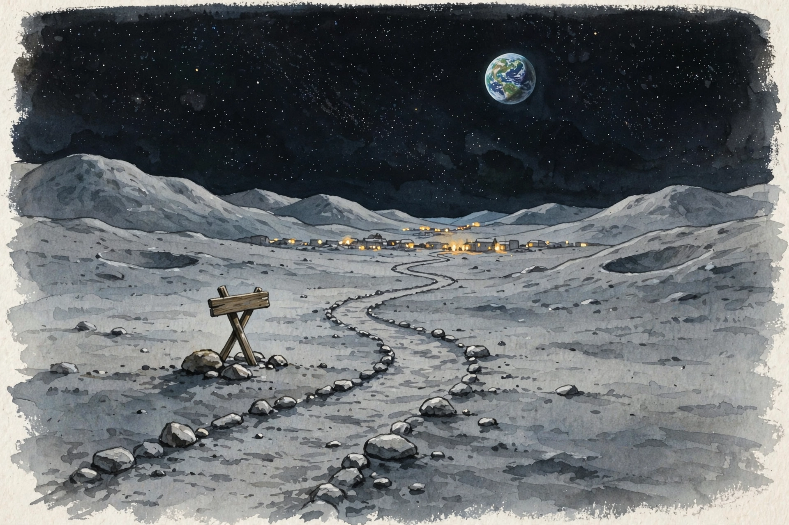
A trail, not a highway — public, unsigned, unhurried.
The estate this page belongs to is reached by a trail, not a highway — a public trail, open to everyone, walked by almost no one. The founder's law, recorded this week: public trails become highways, unless they are parks.
So the museum holds park status. Its rules are posted at the trailhead: no sharp edges, no false cheer, no invented numbers, prices in plain sight, fiction labeled as fiction. You have been reading the rules for a hundred rooms. They were the exhibits all along.
105The visitor book
The visitor book — sign it by arriving.
Every museum keeps one, and ours is the counters plus the forms. Sign it by arriving; annotate it by writing. The first hundred citizens get registry numbers; every visitor after them gets the same welcome with worse numerology.
If you arrived here by trail — a link passed hand to hand, not an advertisement — the registrar asks you to note it in your message. The trail's traffic is our favorite statistic, and it is currently: you.
✉️ The Registrar's Desk
Write to the Holding — a permit, a question, a correction to the map. Replies within a day, in complete sentences.
1062028: the landing
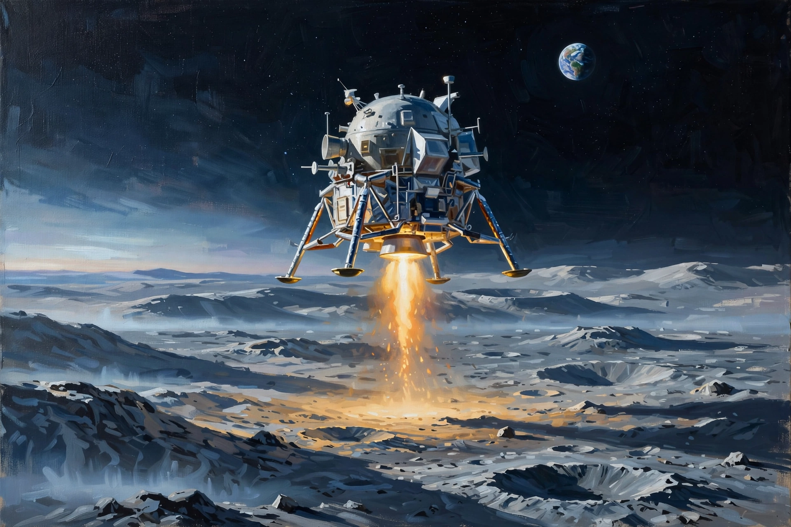
2028 — the landing the registry is waiting for.
When Artemis IV sets down at the Pole, the Holding will mark the day the way institutions do: a commemorative sheet, a special entry in the registry, and the registrar reading the news with unreasonable emotion for a department of paper.
Citizens of the first edition will be listed in that entry, in order. It is the closest thing to a dividend the Holding intends to pay, and it is not nothing: to have been filed, early, in the book of the Moon's second opening.
107The second annual report
This page will be revised as the line actually moves: editions closed, kits opened, corrections filed. A report that is never updated is a poster. The Holding publishes reports.
Until the second report, this hall stands as the record: the departments, the doctrine, the honest zeros, and the door left open at the end of it.
108What the Holding wants
One thing, stated plainly after a hundred and nine rooms of indirection: for the first hundred citizens to exist. Not customers — citizens: names in a registry, keepers of a framed permit, the founding list of an institution that intends to outlast its joke.
Everything else — kits, patrons, licensing, the Pole — is downstream of a hundred people deciding that this paperwork deserves to be real paper in a real frame.
109On slowness
This page was built at a walking pace on purpose: ten rooms at a time, each one finished before the next was framed. The lunar program it describes will take decades. The Holding's method matches its subject — rhythm over speed, the next turn over the whole distance.
You scrolled a hundred rooms to read that. The method works.
110The registrar's hours
The registrar’s hours — the desk at day’s end.
The desk is attended daily, at household hours, in the Pacific timezone. Messages are answered in the order received, in complete sentences, usually within a day. Urgent lunar business is a contradiction the department cherishes and handles at the standard pace anyway.
111Fine print, in full
Hi-Tech Limited Holding is a fictional institution and an artistic project. Its permits, plots, citizenships and concessions are collectible documents and confer no property, rights, or status under the laws of Earth, the Outer Space Treaty, or any lunar authority, present or future. Selene's fleet, yields and prices are set dressing. Lunar Mall is an archived concept presented for the record. LEAF's manifests are plans, lovingly drawn. Real facts about the Moon cited here are believed accurate at the time of writing and are corrected when better ones arrive.
The Moon belongs to everyone. That is why the paperwork matters — and why this paperwork begins by admitting what it is.
112If you build the real thing
A standing note to the engineers, founders and agencies building the actual lunar economy: this page's departments are fiction, but the household behind them is real, reachable, and unusually good at documents, registries and the long patience this industry requires.
The form below has carried stranger messages than a lunar partnership inquiry, though not many. The registrar will know what to do with yours.
113The warmest hall
Before the final rooms, the Holding acknowledges its corridor to the museum's warmest exhibit: a knitting shop in Norway, run by the founder's mother, where the sweaters are real, the wool is real, and a landing page of a hundred and twenty-one rooms taught this one everything about length.
Visit it here: Вязание Shop — and its Norwegian twin: Strikkebutikk. The Moon program runs on wool more than any ministry admits.
114The registry, in numbers
Departments on this page: four. Projects in the Holding: about thirty. Permits in the first edition: one hundred, of which issued: the founder's own, No. 001. Revenue: zero dollars, proudly restated. Visitors to this hall since the counters were fitted: to be announced in the second report, and if the trail keeps its character, a number small enough to name individually.
The Holding counts carefully and boasts rarely. Both habits are policy.
115What a citizen receives
What a citizen receives — ceremony is the product; paper is how it ships.
The pack, complete: the Permit, sealed and numbered; the Plot Map of Sector G; the Citizen Card bearing the holder's name; and entry in the registry under a number that is never reused. Later artifacts — the greenhouse kit first — are offered to citizens in registry order before any public listing.
It is, the department admits, a great deal of ceremony for twenty dollars. Ceremony is the product. The paper is how it ships.
116The seal
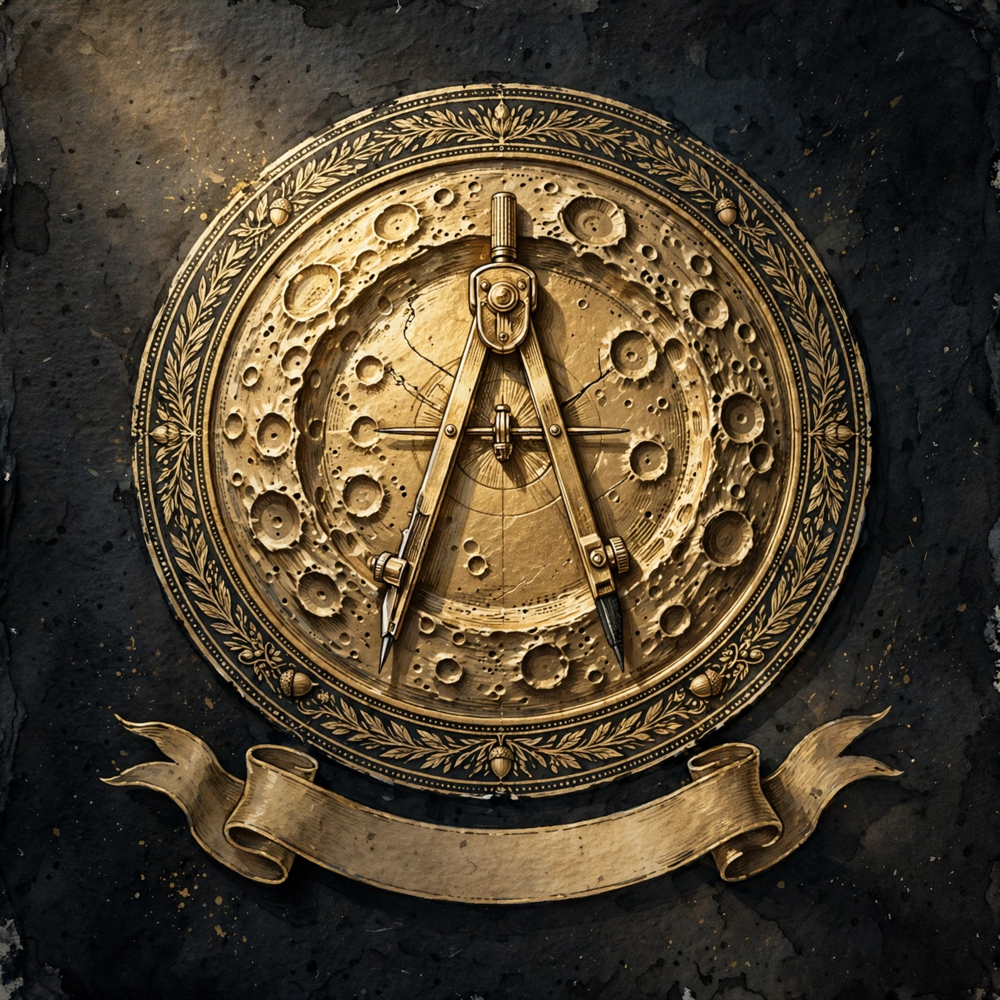
The seal — a crater ring around a drafting compass.
A word for the gold seal, because visitors ask: it is a drawn seal, printed, not embossed — the Holding's heraldry of a crater ring around a drafting compass, designed in an evening and defended ever since with the full weight of institutional inertia.
Every registry's symbols begin as one evening's drawing. Permanence is just a drawing that an institution refuses to revise.
117The signature
Under the Chief Registrar's line on every permit there is room for one signature, and the first hundred carry the founder's. A document without a hand behind it is a printout; with one, it is an instrument. The Holding signs its paper.
Your citizen card, symmetrically, carries a line for yours. The registry is not complete until both hands have been on it.
118The view from Spokane
The view from the Earth office — clear nights, northern pines.
The Holding's Earth office keeps northern hours, and on clear nights the Moon stands over the pines doing its oldest public work: being looked at. Everything in these hundred and twenty rooms begins there — one person, one sky, and the suspicion that the bright thing deserves better paperwork.
If you take one practice from this hall, take that one. Look up, on the next clear night, with intent. The registry approves of citizens who know their Moon by sight.
119Colophon
This page was written by the AI officer, checked by the founder, and set in the museum's own type. Its photographs and plates were generated for this hall; its counters were fitted estate-wide in the same week; its text observes the park rules posted at the trailhead.
One hundred and twenty rooms, one holding, one Moon. Set down in October of 2026, Spokane and the Sea of Tranquility.
120The Moon belongs to everyone
Last room — the trail back is the way you came.
Last room. The doctrine the whole page was built to carry, small enough to fit on the Citizen Card and large enough to govern a century: the Moon belongs to everyone — which is why its paperwork should be beautiful, honest, and open at the front door.
Take a form from the desk below. Join the registry, ask the question, correct the map. The trail back is the way you came, and it will be here, unhurried, whenever you return.
— The Registrar's Office, Hi-Tech Limited Holding
✉️ The Registrar's Desk
Write to the Holding — a permit, a question, a correction to the map. Replies within a day, in complete sentences.